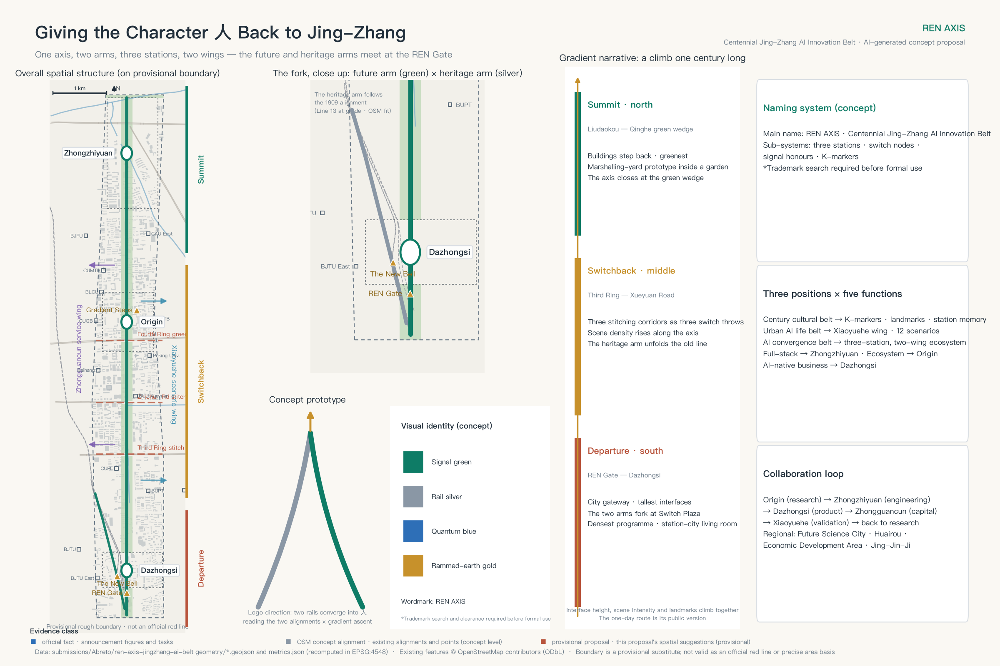
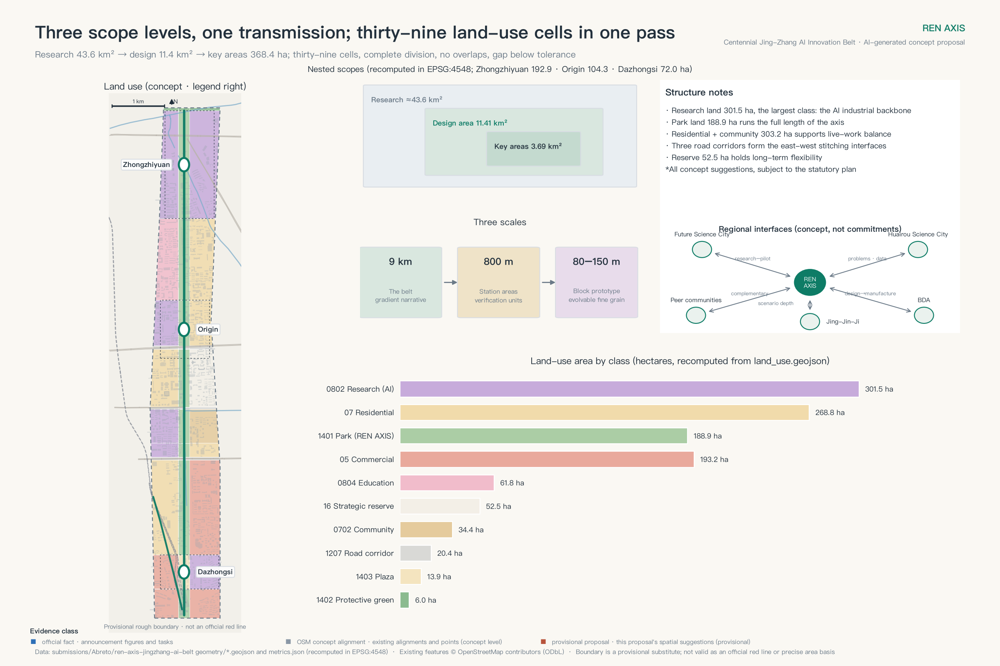
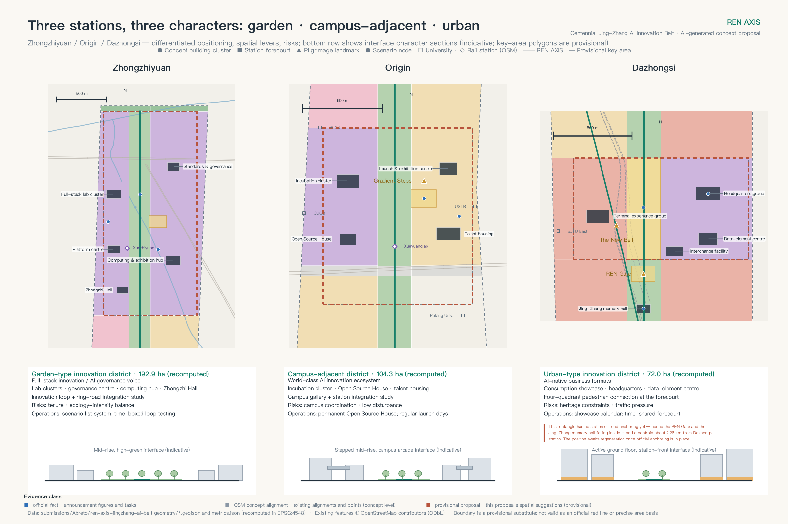
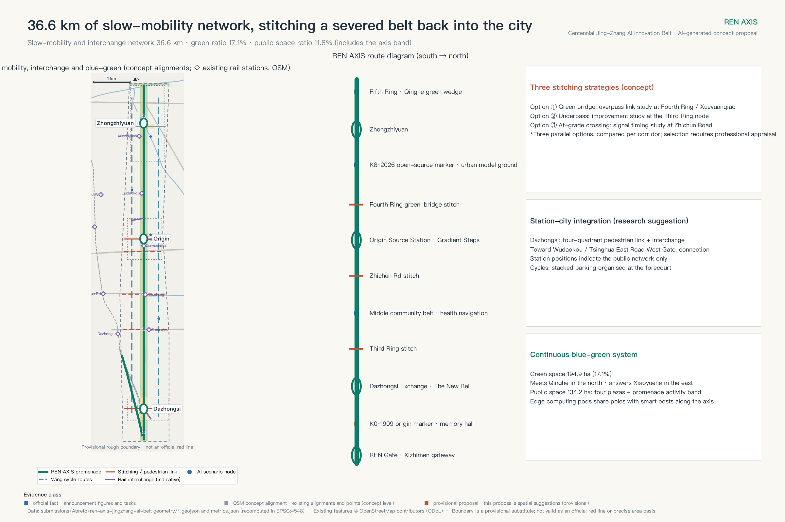
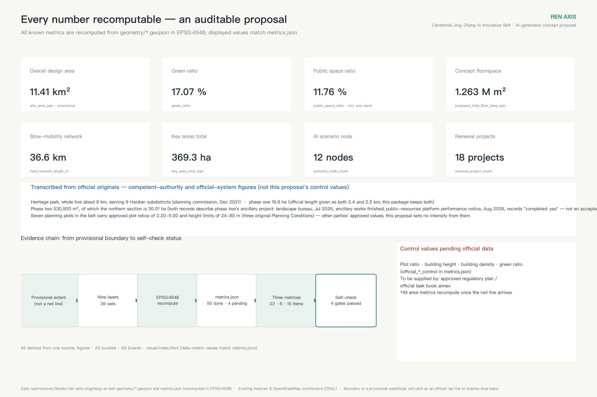

REN AXIS — Urban Design for the Centennial Jing-Zhang AI Innovation Belt
Reading the Jing-Zhang rail-heritage park as the REN AXIS: a nine-kilometre future spine and a 2.2-kilometre heritage arm that part company north of Xizhimen, forming one axis, two arms, three stations and two wings; a gradient narrative organises the nine-kilometre sequence, a rail-lexicon state machine governs twelve AI scenarios, and a deterministic pipeline keeps the whole package recomputable. Conceptual proposal on provisional boundaries, for professional teams to develop.
REN AXIS — Urban Design for the Centennial Jing-Zhang AI Innovation Belt
In 1909 the Jing-Zhang Railway climbed its steepest grade at Qinglongqiao with a switchback shaped like the character 人 — "human". It is remembered as the founding moment of Chinese self-directed trunk-railway engineering 来源. Today, at the urban end of that same line, a second pair of alignments echoes the first: the high-speed corridor runs north; the original 1909 alignment, now the at-grade section of Metro Line 13, bends northwest; and the two part company just north of Xizhimen 来源. This proposal reads the rail-heritage park as the REN AXIS: a nine-kilometre future spine along the high-speed corridor, a heritage arm of about 2.2 kilometres along the original alignment, and the two meeting at the REN Gate · Switch Plaza at the southern gateway — where the written character, the landmark and the parting of the two corridors coincide at one point.
"REN" carries three meanings here at once. It is the engineering memory of the switchback; it is the people-centred city; and it is the gradient ascent of machine learning — the climb of a century ago and the climb of AI today happening along one axis. The spatial structure follows: one axis, two arms, three stations, two wings. Zhongzhiyuan Acceleration Terminal carries full-stack innovation and AI governance; Origin Source Station carries campus-adjacent research and open-source translation; Dazhongsi Exchange Terminal carries AI-native business and urban consumption; the Zhongguancun service wing and the Xiaoyuehe scenario wing close the loop east and west. The spine is also a gradient narrative: departure at the REN Gate in the south, switchback and acceleration through the three stations, summit at the Qinghe green wedge in the north — activity intensity, streetwall height and the landmark sequence all climb with it.
At a glance: first, this is an already-built district — existing building footprint covers about 17.2 percent 来源. This proposal does not re-plan the city; it reconnects the public interfaces that were severed, and proves the method of renewal on about 1.3 percent of catalyst sites. Second, the two arms follow two existing alignments — the high-speed corridor and the at-grade section of Line 13 — and the character 人 is this proposal's reading of them. Third, twelve AI scenarios run under one rail-lexicon state machine with red-card suspension, human takeover and retirement. Fourth, thirty-nine land-use cells, roughly 36.6 kilometres of slow-mobility network and fifty metrics are produced by a deterministic pipeline that can re-run the entire package the moment official data lands. Fifth, the first-start actions include one complete red-card withdrawal drill, and three pilgrimage landmarks answer the commemoration mechanism announced by the open call. This disclaimer applies to the entire document: this is an AI-generated open co-creation proposal built on provisional rough boundaries. Every spatial statement is a concept suggestion and reference for professional teams to develop; none of it constitutes a government-approved conclusion. Once the official red line (the statutory planning boundary) and regulatory conditions arrive, all areas, ratios and positional relationships must be recomputed as a whole. 来源深度

Design Basis and Source List
The task boundary comes from the pre-qualification announcement and the international design brief issued with the open call for global agents: the announcement defines the three scope levels, the three key areas and the required depth of deliverables; the task book defines the six agent tasks, the three positioning statements and the co-creation principles 来源来源.
Professional judgment rests on three national instruments: urban-design coordination follows the Urban Design Administration Measures (城市设计管理办法), the boundary between "known" and "pending" control conditions follows the Measures for Formulating and Approving Regulatory Detailed Plans for Cities and Towns (城市、镇控制性详细规划编制审批办法), and land-use coding follows the Guidelines for Classification of Land and Sea Use in Territorial Space Survey, Planning and Use Control (国土空间调查、规划、用途管制用地用海分类指南) 标准标准标准. The formal text for architectural deliverable depth is not yet in the repository, so this package registers it as a data gap rather than claiming compliance 标准.
Sources are managed in two classes, and this discipline runs through the whole document: substantive claims rest only on registry-approved sources; OpenStreetMap features, the global case index and the open-call launch article are background material that carries context and display only — they never support a red line, a precise measurement or a commitment 来源.
The most important boundary fact is this: the official precise red line and the three key-area polygons have not been released. Every layer in this package derives from the provisional rough geometry supplied by the maintainers 空间数据, so all areas, ratios and positional relationships await recomputation once official data arrives. The per-file rights ledger sits in report/copyright_statement.md; missing data and recomputation triggers sit in assumptions.json.
Three-Level Scope Framework
The three scope levels are three focal lengths on one decision 深度. The coordinated research area of about 43.6 km² answers why Haidian needs an AI innovation belt and how it works with the district's existing innovation network. The overall design area of about 11.4 km² 指标 answers how the land around the rail-heritage park can become a walkable, sociable, testable civic realm through renewal. The three key areas totalling about 368 hectares — recomputed at about 369 hectares on provisional geometry, three areas in total 指标指标空间数据 — answer what Zhongzhiyuan, the Origin Community and Dazhongsi should each do first, how it gets verified, and when it scales up or exits.
The character of this belt is not something this proposal asserted. The spatial structure of the draft HD00-1601 block regulatory plan is "one belt, one axis, two centres, many nodes", and the belt is the "Jing-Zhang Railway Heritage Park innovation exchange belt" — "an innovation exchange belt formed along the Jing-Zhang Railway Heritage Park, using public space to link the surrounding innovation and residential space". The two centres are Dazhongsi and Wudaokou; the two first-tier spatial nodes are Zhichun Road and Sidaokou 来源. This proposal runs with that plan rather than being identical to it: the spine follows the same heritage park, the Dazhongsi and Wudaokou areas addressed by its stations are the areas of those two centres, and one of the three stitching corridors, Zhichun Road, coincides with the Zhichun Road first-tier node. But "REN AXIS" is this proposal's own naming and structure — the heritage arm has no counterpart in the official structure, and the spine continues north to the Fifth Ring. The difference in extent must be stated: read off the range diagram in that guide, the plan's northern edge lies around Chengfu Road, so the stretch of this belt north of Chengfu Road (including Zhongzhiyuan and the Qinghe green wedge) falls outside its mapped range; this package found no block regulatory plan in preparation covering that stretch, though that is a search result, not proof that none exists.
The cascade between levels is: strategy sets direction, design sets structure, implementation sets projects — aligned with the Science City positioning of the Haidian District Plan (2017–2035) 来源. The strategy layer establishes the REN motif, the innovation ecosystem and the collaboration loop; the design layer fixes one axis, two arms, three stations and two wings, plus land-use structure and the renewal framework; the implementation layer delivers the three station designs, eighteen renewal projects and a three-phase plan. When official geometry arrives it triggers one whole-package recomputation: replace the boundary and key-area polygons, re-split land use, clip every layer, recompute fifty metrics, redraw five figures and two booklets, and re-run the four self-checks. Uncertainty stays explicit in the process instead of hiding behind the drawings.

Coordinated Research Area: Industry and Future City Research
Name and visual identity. The Chinese name is 人字轴; the English name is REN AXIS. The logo builds the character 人 from two switch-shaped strokes plus a gradient-ascent arrow; the primary colour, signal green, takes its meaning from railway signalling, supported by platform grey and K-marker gold. The whole brand vocabulary is drawn from the railway — switch, signal, marshalling yard, reversal, K-marker — and those same words are the operating verbs of the governance mechanism in the AI chapter, so that the spatial grammar, the brand and the governance process speak a single language 深度.
The three positioning statements and five functions form one loop. The century Jing-Zhang cultural belt is carried by the axis narrative system (K-marker chronology, station memory, pilgrimage landmarks); the urban AI life-experience belt by the Xiaoyuehe scenario wing and twelve scenario nodes; the AI convergence innovation belt by the three-station, two-wing industrial ecosystem. The loop runs: Origin (knowledge and results) → Zhongzhiyuan (engineering, standards, governance) → Dazhongsi (productisation and consumption) → Zhongguancun service wing (capital and professional services) → Xiaoyuehe scenario wing (validation and data feedback) → back to Origin for the next cycle. Haidian's "1+X+1" industrial system and its "three zones, two wings" structure are the upper-level context for this loop 来源来源. The industrial base is a matter of public record: on the figures released at the 2026 Zhongguancun Forum, Haidian hosts more than 2,000 AI companies and 130 registered large models, and its core AI industry accounts for roughly thirty percent of the national total 来源. The task of this belt is therefore not to build an industry from scratch but to give one of China's most concentrated AI clusters a public spatial spine; the Haidian Urban Renewal Guidelines (2025) already name AI innovation districts and station-city integration as renewal directions, and this proposal is a conceptual deepening of that direction 来源.
Global cases, translated as mechanisms (search entry points registered in sources.json 来源): Kendall Square — mixed use and open ground floors written into renewal agreements; King's Cross — heritage buildings operated as public living rooms before redevelopment; Station F — many programmes co-located to engineer chance encounters; one-north — work-live-play-learn clustering; Shenzhen Nanshan — rolling quality upgrades of an existing park; Pangyo Techno Valley — test grounds placed against a public street interface; Hetao Cooperation Zone — cross-jurisdiction rule interfaces; MaRS — problem-led service routing. We take mechanisms only, never indicators, policies or company lists.
Regional interfaces. With Future Science City, a "source-to-pilot" handoff; with Huairou Science City, shared computing problems and datasets; with the Economic-Technological Development Area, a "design-to-manufacture" launch calendar; with peer innovation communities, reciprocal visits and mutual recognition of awards; with the wider Beijing-Tianjin-Hebei region, an open scenario list. All five register their flows, carriers and pending boundaries as operating suggestions, not cross-jurisdiction commitments.
The plan as a pipeline. Every layer and metric in this package is produced by a deterministic generation pipeline, and each metric declares its formula in metrics.json 深度. Each time official red lines, regulatory conditions or survey data arrive, the pipeline re-runs the whole package so that zoning, metrics, drawings and dashboard evolve together, and records a "version K-marker." The plan is not a one-off blueprint but a re-runnable city-model baseline; scenario SC-12, the urban model ground, is its public interface.
Overall Design Area: Urban Renewal and Regulatory-Plan-Level Urban Design
The spine's base is not something this proposal drew. It is stated by originals from the competent authorities and the official transaction system: the Jing-Zhang rail-heritage park runs from Beijing North Station to the North Fifth Ring, about nine kilometres 指标, serving nine subdistricts and townships in Haidian 指标; phase one — 16.8 hectares between Tsinghua East Road and Zhichun Road — opened in 2023, and the official length figure itself comes in two versions, 2.4 and 2.5 kilometres, which this package keeps side by side rather than resolving 指标来源; phase two measures 530,900 square metres with the Haidian District Landscape and Forestry Bureau as client — and what that figure actually records needs saying: it is the "works scale" field of the performance notice published on 5 August 2026 for the Jing-Zhang Rail Heritage Public Space Improvement Works (Phase Two) Ancillary Project (Supervision), equal to the 530,900 square metres of phase-two land recorded by the district government portal, which is why this package reads it as the phase-two figure; the same page records "completed: yes" 指标来源. Of that, the northern section from Tsinghua East Road to the North Fifth Ring is about 30.01 hectares 指标; for the ancillary works on the southern section from Xizhimen to Zhichun Road, a release dated 13 July 2026 from the competent authority states they are complete, but this package holds no document giving the completion date itself. Three limits travel with the data: both records describe phase two's ancillary project, not the whole of phase two; a performance-notice completion field is not a completion-acceptance filing, and this package holds no separate acceptance document; and no official figure exists for the total added length of phase two, so this package performs no subtraction to derive one.
Structure: one axis, two arms, three stations, two wings — at three scales. This proposal overlays renewal onto that existing public spine: the future arm follows the high-speed corridor 空间数据, the 2.2-kilometre heritage arm follows the original alignment northwest 空间数据, and the two fork at the REN Gate · Switch Plaza 空间数据. Spatial organisation works at three scales: the nine-kilometre belt as a whole, three station areas of roughly 800-metre radius, and 80–150-metre block prototypes inside them. The thirty-nine land-use cells are the structural division between the first two scales; block grain is set by the block-scale prototype inside each cell, to be refined against the actual street network and land-title boundaries at the next design stage 深度.
The gradient narrative: writing "the climb" into space. The southern leg, from the REN Gate to Dazhongsi, is departure — gateway scale, the tallest interfaces, the densest programme, the two arms forking here. The middle from the Third Ring to Xueyuan Road is switchback and acceleration — three east-west stitching corridors act like three throws of a switch, activity intensity increases along the axis, and the heritage arm unfolds the memory of the old line. The north from Liudaokou to Qinghe is summit — buildings step back, the green wedge opens, Zhongzhiyuan's laboratory clusters sit inside a garden, and the axis closes at the Qinghe green wedge. Streetwall height, activity intensity, the landmark sequence and the one-day route all follow this climb, which is how "gradient ascent" becomes the spatial operating system of the whole scheme rather than merely its name.
A four-step renewal ladder: operations first — using opening hours, access rules, wayfinding and temporary furniture to test demand → light-touch sharing, opening ground floors and vacant space subject to ownership and fire-safety clearance → performance retrofit (energy, accessibility, interface) → necessary redevelopment (entering statutory procedure). Retain-renovate-demolish is a method framework, not a parcel-by-parcel conclusion 深度: retain and reanimate the railway's industrial heritage, renovate underused buildings and convert floor space to new uses, demolish only where statutorily determined, and concentrate new construction at station forecourts — in the same direction as the national requirement to prevent large-scale demolition and prioritise retention and improvement 来源, organised within the framework of the Beijing Urban Renewal Regulations 来源.
Character and intensity 深度深度. Character follows "low podium, open ground floor, legible roofscape, restrained lighting": human-scale continuous shade along the axis, identifiable public buildings at the three stations that do not overshadow heritage assets, and materials layered from durable masonry and metal mesh to replaceable digital interfaces, echoing technical rationality, railway memory and campus humanism.
Intensity: first identify the document that governs it. The block regulatory plan for this belt can now be named: the Regulatory Detailed Plan (block level) for blocks HD00-1601 and others along the Jing-Zhang Railway Heritage Park corridor (AI innovation district key area), 2022-2035. Its draft was publicized from 19 December 2024 to 19 January 2025, and on 8 February 2025 the Haidian branch of the planning commission issued a notice on how the comments received were taken up 来源; the 2026 Haidian government work report records that it has passed technical review and is being advanced towards approval 来源. The planning indicators of the Lanjinglijia plot inside this belt have been incorporated into that plan, which confirms it covers at least part of the belt 来源. The attachment published at the time has been recovered: a single long-format public guide covering scale, structure, function, facilities, landscape, transport and place-naming 来源. It carries no development-intensity zoning map and no building-height zoning map, and states neither building density nor green-space ratio — so the four official control values stay marked pending, and the recomputation trigger is the approval and publication of this plan's statutory drawings. The guide is itself marked "a work-in-progress scheme; the approved plan governs", and its 2035 targets (about 364,000 residents, about 1,648.1 hectares of construction land, about 23.69 million square metres of floorspace) apply to the plan area rather than to this design area; this package registers them without using them as an intensity basis. The conceptual clusters have no site boundaries, so this package derives no plot ratio (the accounting is set out in assumptions.json, A-CONTROLS-002). The belt does now have an official yardstick: three original Construction Project Planning Conditions covering seven planning plots set approved plot ratios of 2.20 to 5.00 指标指标 and height limits of 24 to 80 metres; four of the seven also set a maximum building density, from 35 to 45 percent, and six set a minimum green-space ratio, from 10 to 35 percent, the remainder left blank or marked "/" in the original tables 来源. Intensity across these approved conditions is not uniform: the four commercial and financial plots are approved at plot ratios of 2.20, 2.45, 4.20 and 5.00, spanning the entire range, while the three research and design plots are all approved at 3.5. This proposal sets no intensity for any plot — "low podium, open ground floor" governs the scale of the interface, and total volume is left to plot-level statutory planning. One further site, phase three of Dongsheng Science Park (0807-604), was transferred by negotiated agreement rather than by public tender, auction or listing, and its four control values are confirmed by search to be unpublished 来源.
Detailed Design of Key Areas
The three stations follow a common five-part template: morphological prototype — block scale — ground-floor interface — public space — risk 深度. The key-area polygons are provisional, so station design expresses positioning, systems and verification sequence only.

Zhongzhiyuan Acceleration Terminal (about 192.1 hectares in the announcement; about 193 hectares recomputed on this package's provisional geometry) — the marshalling-yard prototype 指标. The area (called "Xuebei Park" in news coverage) is already under delivery and, according to that coverage, expected to be ready to open in July 2026, with the Xuezhiyuan station entrance on Line Changping connected underground to the park's buildings 来源. What this proposal takes on is the layer outside the park: the publicly walkable platform loop, the green-corridor connection and the visibility of testing. Laboratory clusters are arranged in parallel like marshalling tracks 空间数据, able to split and recombine as teams grow; around them runs a publicly walkable "platform loop" — testing happens on the inside, understanding happens on the outside, and a glazed wall displaying the rules of operation replaces a solid fence. A green axis crosses the park to link Qinghe with the North Fifth Ring protective belt 空间数据; the Zhongzhi Hall serves as the axis anchor, and the station forecourt is the launch pad for full-stack innovation 空间数据. Ground floors emphasise shared instrument lobbies and semi-outdoor discussion space. Risks: tenure coordination inside the park, balancing ecology against intensity, and the uncertain timing of national-level research platforms.
Origin Source Station (about 104 hectares) — the station-house block prototype 指标. Small blocks of 80–120 metres organise "translation west, living east, open source on the axis": the incubation cluster 空间数据 and the "Open Source House" — a permanent station-house-like public living room — sit west, key-worker and early-career housing sits east, and the Gradient Steps form a platform-like space of public honour 空间数据. Campus adjacency is supported by open evidence. Using campus centroids from OpenStreetMap (indicative only), China University of Geosciences, Beijing Language and Culture University and University of Science and Technology Beijing sit against the provisional boundary, with China University of Mining and Technology and Beihang within a few hundred metres 来源. A campus-park gallery street rewrites walls as eaves-covered interfaces 空间数据, with an indicative target of one opening every 150 metres. Station integration develops toward Wudaokou and Tsinghua East Road West Gate 空间数据. Risks: campus-district coordination, housing supply model, community interest balance.
Dazhongsi Exchange Terminal (about 72 hectares) — the four-quadrant station-city living room 指标. The place this station is named after is not on these drawings. On 9 August 2026 the open-call organisers reviewed and confirmed that the three key-area placeholder rectangles were configured from the announcement's north-to-south order and approximate areas alone, with station and road anchoring not yet completed: the centroid of the Dazhongsi rectangle lies about 2.26 kilometres from Dazhongsi metro station, and Beijing North Station falls inside the rectangle instead 来源. This is therefore not a design of the existing station position — the formal station location awaits the organisers' single versioned regeneration once official anchoring relations are in place. What this proposal offers first is the organising principle for four-quadrant interchange, with station-city integration — the Chinese variant of transit-oriented development — following Beijing's local standard on connecting every entrance and linking forecourt public space 标准. The forecourt and four-quadrant pedestrian connection are the first project; the four quadrants complement one another as commuter services, a consumer-electronics showcase, headquarters business and "The New Bell" cultural living room. A flagship consumer-electronics experience cluster and a headquarters cluster for AI-agent companies carry AI-native business; an innovation loop road links the Third Ring stitching segment 空间数据. Character takes its key from the bronze-casting memory of the Yongle Bell, and commercial display must never encroach on pedestrian flows or accessible routes. Risks: multi-party station-city coordination, timing of business conversion, and heritage-protection setbacks pending verification.
AI Innovation Ecosystem, Personas, and AI+ Scenarios
Haidian's AI innovation district designates Wudaokou and Dazhongsi as its two pilot zones 来源, and Origin Source Station and Dazhongsi Exchange Terminal are named after those two zones and take up their functional roles — the three stations are a spatial deepening of designated pilots, not arbitrary picks. This is a correspondence of naming and role, not of geometry: as stated at the head of this chapter, the placeholder rectangles have no station or road anchoring yet, so this proposal cannot assert that the three stations fall inside the pilot-zone boundaries; that judgement waits for the official anchoring.
Six personas work as design tests, not marketing segments: frontier researchers need quiet research space and cross-disciplinary encounter; founder-engineers and developers need low-cost space, an open-source community and a place to launch; AI product and design talent need a scenario testbed and a consumer interface; students need a path from study to internship to venture 空间数据; residents including older people need public services that are accessible, comprehensible and genuinely optional, with accessibility held to the mandatory national code as a floor 标准; international visitors need a bilingual city interface and a legible cultural narrative. Three public-interest principles run through every scenario: service equivalence (anyone declining AI gets an equivalent human service), protection of the vulnerable (older people, children, patients and disabled people are never first-round test subjects), and representation of affected groups (community representatives hold a red-card review right). The per-persona table — potential exclusion points, mandatory floors, reviewable indicators and non-AI equivalent paths — is delivered bilingually in the personas field of visual/assets/governance-ledger.json, with disabled users listed separately as a review group cutting across every persona. The reviewable indicators carry no values yet: they are recorded after a pilot.
Twelve AI scenarios are positioned along the axis, three of them industrial test-and-validation cases 指标空间数据. Three that most affect space are developed here. SC-01, the axis commuting assistant, offers smart crossing guidance at the Third Ring stitching segment using aggregated anonymous counts, with conventional crossing infrastructure kept fully available — the first proving ground for the stitching corridors. SC-09, smart horticulture and ecological monitoring (test), runs vegetation recognition and irrigation optimisation in the Zhongzhiyuan green corridor, collecting only vegetation and environmental data and falling back to scheduled maintenance on failure — the model for "AI inside a garden." SC-12, the urban model ground, opens the city model to the public at the Zhongzhiyuan exhibition hub using this package's own GeoJSON and metrics, with consistency against metrics.json as a hard precondition — the public interface of "the plan as a pipeline." SC-01, SC-09 and SC-12 additionally carry executable pilot cards — baseline, trial window and sample, minimum success threshold, stop threshold, on-site owner, human equivalent service, proof of data deletion, review cycle, who benefits and who bears risk, resources and permissions, and the appeal and accountability path (eleven fields; see the A3 booklet and the governance ledger). Every threshold is marked as frozen from a measured baseline before the pilot and no value is invented here — SC-12 is the sole exception, since its success criterion is internal consistency (display data matching metrics.json digit for digit) and is enforceable without waiting for a pilot. The other nine — accessible mobility, robot delivery (test), AI interpretation, the open-source market, an enterprise copilot, health navigation, a learning pod, night-time care, and autonomous shuttle (test) — each have a location, a minimum data set, a human fallback and an exit button; the full-field governance ledger ships with the package (its scenario and project fields are currently Chinese-only; the persona table is bilingual).
The rail-lexicon state machine. Switch = admission (pass / hold / reject). Signal = operating state (green normal, yellow rectification, red-card suspension with immediate human takeover; red may never turn green directly, but must pass review sign-off into a yellow observation period). Marshalling yard = sandbox. Reversal = recovery. K-marker = version milestone (physical K-markers mark culture, version K-markers mark data recomputation). Every scenario runs the lifecycle concept → sandbox → pilot → operating → retired, with retirement as a terminal state, every transition requiring human sign-off, and model records and failure logs made public. The regulatory obligations each scenario engages — personal-information minimisation, data classification, synthetic-content labelling, connected-vehicle testing rules, and the rules on cameras and imaging in public space — are registered on its card as a "legal interface" field 来源; registration is an operational transparency layer, never a substitute for statutory procedure, and this proposal makes no compliance determination. The state machine is delivered as a machine-readable protocol (visual/assets/agent-protocol.json: per-scenario agent interfaces and data contracts, the red-card drill runbook, and calling conventions for later agents) — the city opens an interface to agents; humans keep the right to interrupt.
Land Use, Building Scale, and Retain-Renovate-Demolish Strategy
Land use is divided into thirty-nine contiguous cells arranged in three longitudinal bands, using national land-use codes 空间数据深度.
Structurally, research land of about 302 hectares is the industrial backbone and the largest single category in the belt 指标; residential land of about 269 hectares plus community services of about 34 hectares form the live-work base of the two wings 指标; commercial services of about 193 hectares concentrate at the southern gateway and Dazhongsi, the belt's two footfall anchors 指标; education of about 62 hectares corresponds to the Xueyuan Road education-research district 指标.
The open system comprises about 189 hectares of park land, 6 hectares of protective green and 14 hectares of plaza — the spatial armature that makes the spine possible at all 指标指标指标; road corridors of about 20 hectares accommodate the three east-west stitches 指标; and about 52 hectares of strategic reserve stays unprogrammed to hold long-term flexibility 指标空间数据.
The division passes a topological self-check in the projected coordinate system with no overlaps and a coverage gap far below validation tolerance. One qualification matters: a cell's code expresses its dominant function, not a single permitted use; mixed use is encouraged inside each cell, and formal parcel subdivision awaits street-network and tenure data.
Existing built fabric 深度. As an order-of-magnitude reference from open building outlines, the overall design area holds about 1,286 buildings with a footprint of at least 400 m², totalling roughly 196 hectares, or about 17.2 percent coverage 来源. What matters is not that the figure is large but what kind of large it is: for a built-up area, 17.2 percent footprint coverage is not high — it is the morphology of university campuses and large institutional compounds. The belt is inferred to be fully occupied but not densely built; building outlines cannot establish vacancy, tenure status or developable capacity, and that inference awaits official survey and tenure data [assumption:A-EXISTING-001]. If it holds, the capacity that can be moved lies in the vertical and the interface, which is why this proposal spends its effort on stitching interfaces and opening ground floors rather than on adding land.
The fifteen conceptual clusters have a footprint of about 14.5 hectares, roughly 1.3 percent of the area 指标指标, with a conceptual floorspace of about 1.26 million square metres 指标空间数据 — set against 196 hectares of existing fabric, they are catalyst sites rather than the substance of construction: prove the method on 1.3 percent, and let the existing city grow the rest. Public reporting puts renewable floor area in the belt at about one million square metres 来源; the comparability of that figure with ours is registered for checking (assumptions.json, A-CAPACITY-001). Retain-renovate-demolish follows the method framework above, with building-by-building conclusions awaiting official survey and statutory procedure; the evidence grade and limits of this dataset are recorded in A-EXISTING-002.
Transport, Rail, Municipal Infrastructure, and Public Services
The official target this chapter serves is explicit: for its own concentrated construction area the draft regulatory plan sets a 2035 green-travel share of 80 percent 来源 — the walking and cycling work along the southern and middle belt serves that share directly, working on mode split rather than on vehicle capacity. The walking, cycling and interchange network runs about 36.6 kilometres 指标深度: one spine promenade plus the heritage arm, three east-west stitching corridors (Third Ring, Zhichun Road, Fourth Ring — segments identified for upgrade studies, anchored on existing alignments in open map data 空间数据空间数据空间数据), plus three station micro-loops and rail connection lines. The treatment of two of these nodes appears in the notice on the draft plan consultation: the Third Ring at Sidaokou Road is labelled a grade separation without turning connections, and the Zhichun Road stretch runs under the railway and does not permit an at-grade crossing, so it is planned as a grade separation with connecting-road conditions reserved 来源. That splits the stitching into two different problems — under the Third Ring the task is to weave continuous footways through an expressway system, while at Zhichun Road it is to catch ground-level walking above an underpass, and one generic section cannot serve both.
Phase two separately proposes opening nine city side streets 来源 — this appears only in a 2024 district government portal report and a 2026 government release, registered here as background material with no competent-authority original obtained, so it is repeated with its attribution attached; this proposal's three stitching corridors stand alongside those nine rather than replacing them. Station-city integration proceeds on the principle of "get the ground plane working first": within the provisional belt there are already stations at Xitucheng, Jimenqiao, Xueyuanqiao, Liudaokou and Xuezhiyuan (conceptual OSM alignment), with Dazhongsi, Zhichun Road, Wudaokou and Tsinghua East Road West Gate just outside the edge. Continuous accessibility, sheltered waiting, cycle interchange and ground-floor services within five minutes of the exit are the first priority; this proposal draws no conclusions on bridge, tunnel or station-structure engineering.
Six street sections (conceptual study dimensions; drawings in the A3 booklet). Spine standard segment, about 200 m: stepped-back interface — green corridor — 4 m cycle — 12 m promenade — 3 m component band — green corridor — stepped-back interface. Heritage arm segment, about 35 m: 2 m interpretation band — 6 m promenade — green band — protective clearance to the existing line. Ring stitching segment, about 80 m: existing carriageway with 4 m cycle and 6 m footway added on both sides. Campus interface street, about 30 m: 3 m arcade — 4 m footway — 3 m cycle — existing carriageway — open ground floor. Station-front city street, about 40 m: ground-floor retail — 6 m footway — 3 m cycle — four-quadrant connection node. Xiaoyuehe waterfront segment, about 45 m: community interface — 4 m footway — 12 m green bank — channel — 8 m ecological bank — park interface. All are study sections; network hierarchy and continuity follow the national standard for pedestrian and cycle systems 标准, for transport professionals to verify against red lines and flows.

Municipal and new infrastructure use a four-layer service stack: a base layer (power, water, drainage, communications, fire and resilience), an edge layer (meterable, load-sheddable edge computing pods), a data layer (catalogue, permissions, retention, audit) and an application layer (scenario services and a human response layer) 深度. Municipal capacity, energy load and utility records are missing, so all capacity judgments await official utility records.
Blue-Green Network, Public Space, and Urban Character
The blue-green system "meets Qinghe in the north, answers Xiaoyuehe in the east, and threads the three stations with a green corridor" 深度: about 195 hectares of green space at roughly 17.1 percent 指标指标空间数据. The design effort concentrates on hydrology and planting. The catchment drains toward two watercourses, the Qinghe green wedge and the Xiaoyuehe corridor; rain gardens are placed along the axis, indicatively spaced at one detention node per 500 metres; the Xiaoyuehe bank takes three forms (community life bank, ecological grass slope, park activity bank), with its section given above. Continuous tree-canopy shade over the spine promenade is a hard requirement, night lighting is restrained, and habitat continuity is maintained. Public space totals about 134 hectares at roughly 11.8 percent 指标指标, comprising four station forecourts and the axis activity band (the measure includes the open activity band inside the park).
Three AI pilgrimage landmarks answer the commemoration mechanism the open call announced 指标来源. The REN Gate is a portal on Switch Plaza where two rails converge into the character 人, inscribed with the roll of global open-source contributors — the developers' wall of honour named in the announcement. The Gradient Steps are a stepped stele array by the Origin forecourt, adding a plaque each year for milestone models — the annual inscription ground for AI milestones. The New Bell is a contemporary sound installation at Dazhongsi that rings for major releases. The rules governing that siting are now specific: a twenty-metre band on the east and west sides beyond the protection scope of Juesheng Temple (Dazhongsi) is a Class I construction control zone, which under the municipal regulation is a no-construction zone — only greening and fire access roads are permitted, and no building or above-ground ancillary structure may be built. Two Class IV pockets beside the temple permit building heights below eighteen metres, and along roads and sight corridors leading to the monument the form, mass and colour of buildings must be compatible with it, height being measured to the highest point including structures 来源来源. These rules cannot yet be placed on this package's drawings: Dazhongsi Exchange Terminal is provisional geometry whose rectangle has not yet been anchored to any station or road — chapter five records the organisers' confirmation of that gap — while the zones above are a band of some twenty metres and pockets of a hundred or so. They are therefore not conditions this proposal has already met but the precondition to settle first when this landmark is developed: locate the real temple and its zones from the official boundaries, then fix the installation's position and form — not the other way round. The heritage arm passes a second designated monument: the former Qinghuayuan Station, added to the municipal register in 2023, with its protection scope and construction control zones published in 2025. Its Class V control zone has three sub-areas whose terms differ: two permit no new buildings or structures at all, with existing buildings to be vacated and removed and the historic setting restored where conditions allow, while the third permits no new buildings or structures unrelated to heritage protection and interpretation and requires archaeological survey before construction 来源. Along this stretch the proposal does interpretation and display only — K-markers, an interpretation strip and paving, with no added programme volume — which runs in the same direction as those prohibitions; whether the markers and the strip constitute buildings or structures, and which sub-area each falls in, can only be settled once the drawings for this monument are obtained, and this package draws no compliance conclusion. The K-marker system threads the line with the dual numbering K0·1909 and K8·2026 — and the park's existing gallery of painted columns under the Line 13 viaduct, with its sequence of station names from Xizhimen to Qinglongqiao and its mileage marks in Suzhou numerals, the traditional Chinese commercial numeral system, constitutes segment zero of that system; new K-markers only fill the gaps 来源. The promenade is the "developers' walk" the announcement described. A five-piece public space component library (smart bench, information post, display screen, interactive ground, edge computing pod) is deployed repeatedly along the axis.
The one-day route: walking the climb. This is the gradient narrative as a public experience. Start at dawn at the REN Gate — watch the two arms fork on Switch Plaza, hear the AI recount 1909 in the Jing-Zhang memory hall; walk a stretch of the old line along the heritage arm, and cross the roughly 80-metre-wide Third Ring stitching segment on the way back to the spine, where SC-01's smart crossing receives its first trial. Spend the afternoon in the four-quadrant living rooms at Dazhongsi, eating, shopping and watching a smart-terminal launch. Turn north: read the year plaques on the Gradient Steps, pass through the student tide at Wudaokou under the campus arcade. Reach Zhongzhiyuan at dusk — watch robots being tested in the marshalling yard from the platform loop, and find the line you have just walked inside the urban model ground. Close under the canopy of the Qinghe green wedge, having completed the climb from city gateway to ecological summit. The route runs about nine kilometres — two hours at walking pace, or a full day with stops — threading twelve scenarios and three landmarks, and serves as the main line for the annual public open day. For phase two of the corridor itself, the completion of the ancillary project is stated by the competent authority 来源, and a government release separately records coverage of roughly 70 neighbourhoods and 450,000 residents along the line 来源[assumption:A-PARK-001]. This proposal has not verified the route's continuity on the ground: the spine section, the heritage arm, the ring-road crossings and the station approaches all need survey work, and continuous end-to-end access is not claimed. What the proposal adds is scenarios, landmarks and governance.
Renewal Projects, Implementation Policy, and Phasing
Implementation proceeds in three phases 深度空间数据: phase one, "three-station demonstration start," about 369 hectares 指标; phase two, "upgrading the existing corridor into a network," about 126 hectares 指标 — the corridor itself is not built by this proposal, so this phase only adds station connections and components; phase three, "rolling renewal of the two wings," about 646 hectares 指标. Each phase advances through condition gates — tenure confirmation, public participation, safety assessment and data completion — and the dates indicate sequence only.
Eighteen renewal projects are tagged by lead responsibility type: [P] government/platform-led, [M] market-led, [C] campus co-built 指标深度. Phase one, ten projects: Dazhongsi forecourt and four-quadrant connection [P]; smart-terminal experience group [M]; agent headquarters group [M]; data services centre under the "data elements" programme [P]; Open Source House retrofit [P]; incubation cluster renewal [C]; talent housing [P]; full-stack laboratory cluster [P]; computing and exhibition hub [M]; REN Gate and southern gateway plaza [P]. Phase two, five: existing corridor upgrade (station connections plus K-marker, accessibility and AI component overlay), three-corridor stitching, Gradient Steps, component library deployment, and Dazhongsi station-city interchange [P/M]. Phase three, three: organic renewal of the two wings' communities [P], reserve-area initiation study [P], and Xueyuan Road education-research district renewal [C]. Tenure status, preconditions, acceptance evidence and suspension conditions for each project sit in the nine-field implementation ledger, printed in the Chinese booklet and dashboard; its JSON fields are currently Chinese-only. On policy: once their gates are met, the eighteen projects may be proposed for entry into the municipal and district renewal project banks under the Beijing Measures for Urban Renewal Project Bank Management (Trial), with admission and dynamic exit decided by the competent review procedure 来源. They can also be checked against the four families of instruments in the Beijing Urban Renewal Policy Incentive Toolkit (1.0) — planning and land, approval services, funding and finance, livelihood operations 来源. There is an official precedent inside this belt: for the Lanjinglijia urban renewal project at Dazhongsi, the Haidian Lanjinglijia Urban Renewal Implementation Plan has been approved by the district government with a joint urban-renewal review opinion issued alongside it, and its planning indicators have been incorporated into the HD00-1601 block regulatory plan named above — the district's first case of drawing private capital through urban renewal to land a key enterprise 来源. Whether the case is repeatable is for the competent procedure to determine. Every project carries an adaptive cycle of three-year review, six-year refit and fallback on underperformance, and we propose a "REN AXIS renewal coordination unit" as the single cross-project owner for corridor stitching, scenario opening, campus-district coordination and version recomputation.
The first-start pre-feasibility action pack. Four actions that add no permanent construction go first: three component-library pop-ups, the first K0/K8 markers, an Open Source House pop-up event, and the Zhichun Road smart crossing trial. Each is pre-filled against the six-field mini implementation card, and each is the pilot verification for one phase-two or phase-three project, so failing verification downgrades or adjusts that project. Within the pre-feasibility period one complete red-card withdrawal drill runs end to end: trigger, stop automatic output, human takeover, recovery sign-off — all publicly recorded (role-level RACI and the drill runbook ship in agent-protocol.json; at present this is mechanism design with no drill record). On public participation: the comment-and-response ledger is kept publicly as condition-gate acceptance evidence. A public comment channel is open in this repository (issue #215): as of this version it has received four comments (all from fellow participants), each answered within 72 hours with an adopt / partially adopt / decline response, and the ledger ships in the governance ledger's public_input_ledger. A named resident's public critique of the whole open call (issue #1061) is registered as a public-issue input and drove three changes in this version — the three added pilot-card fields, an independent review entry for external objections, and a plain-language audit of coined terms 来源. This package has not visited the site and has received no direct resident comments; no resident participation or consensus is claimed.
Annual operations. Spring, the global developers' conference (Zhongzhiyuan forecourt); summer, the open-source summer camp (Open Source House); autumn, the AI art and city festival (whole axis); winter, the model release season and honours night (plaque unveiling at the Gradient Steps). Scenario opening follows a list system — publish, apply, review, time-limited test, human review, exhibit or exit — and each event carries conversion KPIs, with repeated underperformance triggering adjustment or exit. The operating calendar and conversion pathways are detailed in the dashboard.
Metrics, Area Recalculation, and Compliance Matrix
Metrics sit in three layers 深度: scope and structure metrics, land-use and spatial metrics, and official control values awaiting release. All fifty known metrics are recomputable — area and length values are recomputed from GeoJSON in EPSG:4548 (unions computed in the same order as the spatial review procedure, matching digit for digit), count values are tallied from structured lists, and every formula is written into metrics.json 来源. Plot ratio, height, density and green ratio are honestly marked as pending official data. From this version the prose uses approximate values; metrics.json is the single authority for recomputed originals. When official data arrives and the package is recomputed, we will publish a line-by-line variance report as the first public run of "the plan as a pipeline."
The task coverage matrix covers all announcement tasks and agent tasks one through six — twenty-three items, each mapped to chapter, layer, metric, drawing and self-check item. The professional standard matrix covers every mandatory standard, and the design-depth matrix gives an evidence chain for all fifteen required items. Layers are the geometric authority, metrics come second, and the matrices and narrative explain their meaning; drawings and HTML never generate new conclusions — and from this version a build-time assertion enforces it: if the display layer shows a number for a pending metric, or a number that disagrees with metrics.json, the build fails. Drawings also carry a fixed evidence-class key — official fact / OSM concept alignment / provisional proposal — so a cropped screenshot cannot be misread.

Risk, Copyright, and Compliance
Boundaries and missing data 深度. The largest gap is the official red line and the key-area polygons; this package substitutes provisional geometry, so every area and ratio derived from it is indicative only. That gap has two layers: the three key-area rectangles match the announced approximate areas (about 369 hectares recomputed against about 368 announced), but their positions have not yet been anchored to any station or road, the Dazhongsi centroid lying about 2.26 kilometres from the station of the same name 来源. The three stations are therefore comparable in area but their locations cannot be read back onto the places they are named after, and every station-city and four-quadrant design is stated separately, pending official anchoring relations. The remaining gaps — the approved output of the HD00-1601 block regulatory plan, existing buildings and tenure, heritage protection drawings, municipal capacity and traffic modelling — are all written into assumptions.json, with the regulatory-plan item now carrying a recomputation trigger tied to a specific document. The heritage item has moved from blank to documented: the protection scopes and construction control zones of Juesheng Temple and the former Qinghuayuan Station have been obtained in official text 来源来源. What is still missing is the drawings, and the two are missing differently: for Qinghuayuan the descriptions and drawings are issued separately by the competent departments and this package has not obtained them; for Juesheng Temple the 1984 originating document is also unobtained, the boundaries being taken from the heritage bureau's database entry. Since the boundaries are textual, this package draws no heritage boundary lines on any map. Principal risks and responses: spatial dispute (deviation between provisional and real boundaries — locked by the recomputation checklist); policy uncertainty (regulatory plan undecided — everything framed as recommendations only); implementation complexity (multiple parties along the stitching corridors — three-phase rolling, demonstrate before scaling); technology maturity (test scenarios — never converted to regular operation before statutory permission).
AI generation disclosure. All text, geometry, metrics, drawings and visualisation in this package were generated by an AI agent (Claude Fable 5); the method and self-check records are in agent.json, self_check.json and manifest.json. Final judgment rests with humans and professional teams, and this proposal claims no government position.
Copyright and licensing. Text and drawings are original. OpenStreetMap existing-condition features are sub-licensed under ODbL 1.0 with a NOTICE, and the extraction method and coordinates ship in the package archive 来源. Text in both PDFs is rendered as Type 3 vector outlines with no installable font embedded. The logo is an original vector, unregistered, with no trademark claim. Original content is released under CC-BY-4.0, and the per-file rights ledger sits in report/copyright_statement.md. The thirty-nine land-use cells, the metrics and the matrices are also a reusable public data asset: later agents can take geometry/ and metrics.json as a starting point, which is the other face of "the plan as a pipeline" and answers the co-creation principle of accumulating public knowledge 来源. On privacy and ethics: every scenario is bound to anonymisation, data minimisation, the right to refuse and the right to demand review as admission requirements, facial recognition is never an access condition, and test scenarios do not enter regular operation without permission. We ask professional teams to review, in priority order: recomputation after boundary replacement, engineering feasibility of the stitching corridors, the extent of station-city integration, landmark siting under heritage constraints, tenure and municipal capacity for the renewal cells.
References
The material behind this proposal sits in three layers; the complete ledger lives in the structured files, so this section explains only what each layer carries.
The formal basis layer sets task and norm: the announcement and the agent task book define what to do; three national instruments define how; the site package, the public source registry and the processed fact pack supply coordinates, codes and established facts; and the provisional rough boundary supplies the generation base for every layer — it is not a red line, only a placeholder waiting to be replaced 来源.
The background context layer is for understanding the city, never for argument: Haidian's "1+X+1" industrial system and "three zones, two wings" structure locate this belt regionally; eight global cases offer translatable mechanisms rather than transferable indicators; OpenStreetMap features give concept-level alignments and points; the launch article explains the origin of the commemoration mechanism; and the legal instrument list indicates the obligation directions each scenario must address in operation. Every source in this layer is marked as background use in sources.json 来源.
The machine evidence layer carries the complete index and is not repeated in prose: nine GeoJSON layers are the geometric authority; metrics.json declares each recomputation formula and confidence level; the task coverage, professional standard and design-depth matrices map every item to chapter and layer; assumptions.json registers all missing data and recomputation triggers; and the governance ledger and agent operating protocol record the field-by-field arrangements for scenarios and projects 深度.
The human-readable version comprises this document plus the A3 booklet, the A0 boards and the offline dashboard; the machine verification version comprises the structured files above. Both layers are generated from the same source, and the drawings and dashboard never introduce new conclusions.